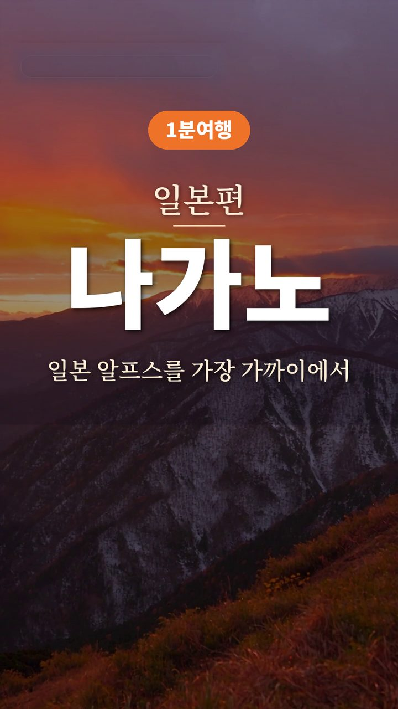
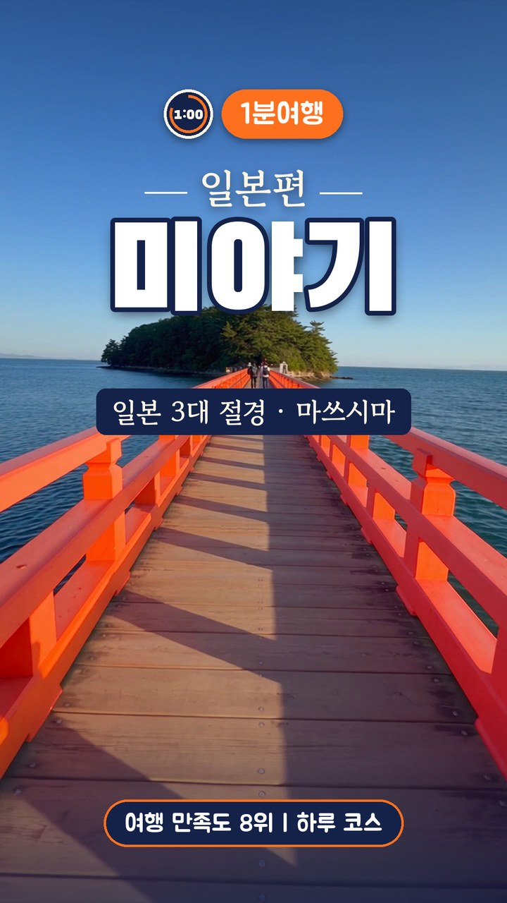
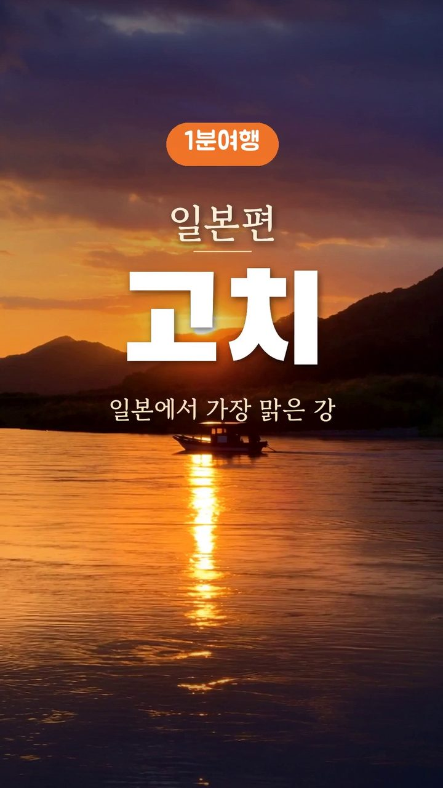
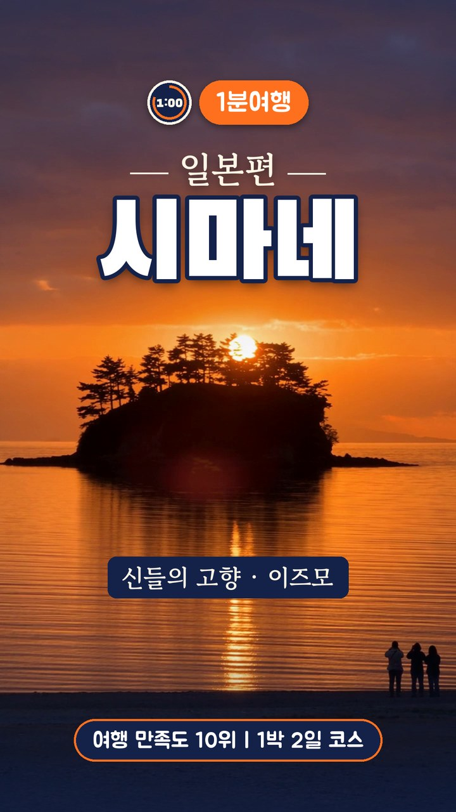

일본인이 가장 만족한
여행지 TOP 10
2026 자란 조사 종합 만족도 순위를 바탕으로, 각 지역의 하루 코스와 맛집·숙소를 정리했어요. 릴스로 1분 만에 먼저 보고, 여기서 자세히 확인하세요.

NEW나가노 1박 2일
일본 알프스를 가장 가까이에서 · 코스·맛집·숙소
자세히 보기 →TOP 10 목록
1위곧 공개
2위곧 공개
3위곧 공개
4위곧 공개
5위곧 공개
공동 6위곧 공개

공동 8위지금 보기 →
공동 8위지금 보기 →
10위지금 보기 →1분여행은요
✈️ 1분이면 떠날 수 있는 여행 가이드예요. 가는 법, 맛집, 숙소까지 한 번에 정리해요.
🌏 지금은 일본부터 시작하고, 앞으로 다른 나라도 하나씩 추가할 예정이에요.
🎬 영상은 AI로 만들고, 정보는 공식 자료로 직접 확인해요.